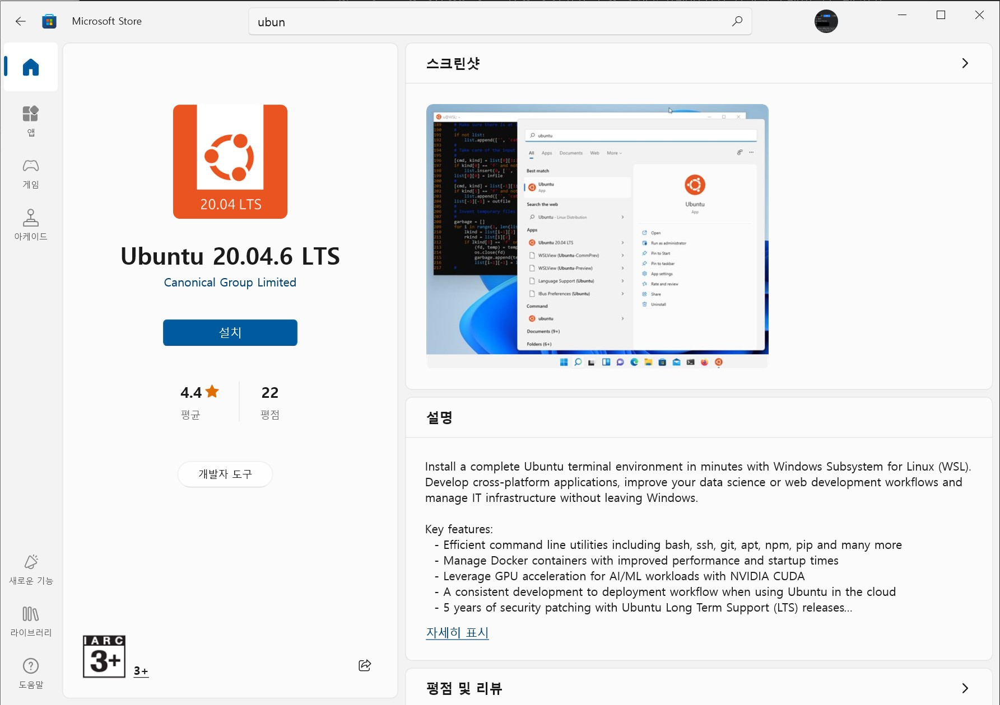

WSL
WSL(Windows Subsystem for Linux)을 사용하여 Ubuntu를 설치하는 방법은 다음과 같다.
Windows 기능 활성화:
Windows 검색창에 “Windows 기능 켜기/끄기”를 입력하고 실행합니다.
“Linux용 Windows 하위 시스템”을 체크하고 확인을 누릅니다.
컴퓨터를 재시작합니다.
Microsoft Store 열기:
Windows 검색창에 “Microsoft Store”를 입력하고 실행합니다.

Ubuntu 검색 및 설치:
Store에서 “Ubuntu”를 검색합니다.
원하는 Ubuntu 버전(예: Ubuntu 20.04 LTS)을 선택합니다.
“설치” 버튼을 클릭합니다.
Ubuntu 실행:
설치가 완료되면 “실행” 버튼을 클릭하거나,
시작 메뉴에서 Ubuntu를 찾아 실행합니다.
초기 설정:
처음 실행 시 새 UNIX 사용자 이름과 비밀번호를 설정합니다.
이제 WSL을 통해 Ubuntu를 사용할 수 있습니다. 터미널에서 Linux 명령어를 실행할 수 있으며, Windows 파일 시스템에도 접근 가능합니다.
Strawberry Perl
Strawberry Perl 은 Windows용 Perl 환경으로, Perl 애플리케이션을 실행하고 개발하는 데 필요한 모든 것을 포함하고 있습니다. 주요 특징은 다음과 같습니다:
완전한 Perl 환경: Perl 인터프리터, 라이브러리, 모듈 등을 포함합니다.
UNIX 유사성: UNIX 시스템의 Perl 환경과 최대한 유사하게 설계되었습니다.
개발 도구 포함: gcc, make 등의 개발 도구가 함께 제공됩니다.
쉬운 설치: 원-클릭 설치로 간편하게 설정할 수 있습니다.
자동 PATH 설정: 설치 시 시스템 PATH에 자동으로 추가됩니다.
CPAN 모듈 지원: Perl 모듈을 쉽게 설치하고 관리할 수 있습니다.
Strawberry Perl은 Windows 사용자가 UNIX 스타일의 Perl 개발 환경을 쉽게 구축할 수 있게 해주는 도구로 Perl 스크립팅이나 개발을 Windows에서 하려는 경우에 특히 유용합니다.
MinGW-w64
MinGW-w64는 Windows 시스템에서 GCC 컴파일러를 지원하기 위해 만들어진 프로젝트입니다. 2007년에 원래의 mingw.org 프로젝트에서 분기되어, 64비트 지원과 새로운 API를 제공하기 시작했습니다. 이후 널리 사용되고 배포되어 왔습니다.
Git Bash 설치: Git Bash가 설치되어 있지 않다면, Git 공식 웹사이트에서 다운로드 하여 설치하세요.
MinGW-w64 설치: make 명령어를 사용하려면 MinGW-w64를 설치해야 합니다. MinGW-w64 웹사이트에서 다운로드 할 수 있습니다.
환경 변수 설정: MinGW-w64의 bin 디렉토리를 PATH 환경 변수에 추가하세요.
Git Bash 실행: 시작 메뉴나 바탕화면 아이콘을 통해 Git Bash를 실행하세요.
make 사용: 이제 Git Bash 터미널에서 make 명령어를 사용할 수 있습니다. 예를 들어:
R 코어 설치
우분투에 최신 R 버전을 설치하는 방법을 안내해 드리겠습니다:
먼저 시스템을 업데이트합니다:
sudo apt updatesudo apt upgrade
R의 공식 저장소를 추가합니다:
sudo apt install software-properties-commonsudo add-apt-repository 'deb https://cloud.r-project.org/bin/linux/ubuntu focal-cran40/'
R 프로젝트의 GPG 키를 추가합니다:
sudo apt-key adv --keyserver keyserver.ubuntu.com --recv-keys E298A3A825C0D65DFD57CBB651716619E084DAB9
다시 시스템을 업데이트합니다:
최신 버전의 R을 설치합니다:
설치가 완료되면 R 버전을 확인합니다:
statkclee@dl:~$ R --version R version 4.4.1 ( 2024-06-14 ) -- "Race for Your Life" Copyright ( C ) 2024 The R Foundation for Statistical ComputingPlatform: x86_64-pc-linux-gnuR is free software and comes with ABSOLUTELY NO WARRANTY.You are welcome to redistribute it under the terms of theGNU General Public License versions 2 or 3.For more information about these matters seehttps://www.gnu.org/licenses/.
리눅스 도구 설치
tidyverse와 tidymodels를 설치하기 위해 Ubuntu에 필요한 기본 리눅스 도구들을 설치하는 과정을 안내해 드리겠습니다.
먼저 시스템을 업데이트합니다:
sudo apt updatesudo apt upgrade
R 패키지 컴파일에 필요한 기본 개발 도구들을 설치합니다:
sudo apt install build-essential
tidyverse와 tidymodels에 필요한 시스템 라이브러리들을 설치합니다:
sudo apt install libcurl4-openssl-dev libssl-dev libxml2-dev libfontconfig1-dev libharfbuzz-dev libfribidi-dev libfreetype6-dev libpng-dev libtiff5-dev libjpeg-dev
추가적으로 필요할 수 있는 라이브러리들을 설치합니다:
sudo apt install libcairo2-dev libxt-dev
데이터베이스 관련 작업을 위한 라이브러리들을 설치합니다:
sudo apt install libmariadbclient-dev libpq-dev
tidy* R패키지 설치
시스템에 필요한 기본 도구들이 설치되었습니다. R에서 tidyverse와 tidymodels를 설치할 준비가 되었습니다. R 콘솔에서 다음 명령어를 실행하여 패키지들을 설치할 수 있습니다:
install.packages ("tidyverse" )install.packages ("tidymodels" )
프로젝트 패키지
tidyverse, tidymodels 기본 패키지 외에 추가로 프로젝트에 연관된 패키지를 설치한다.
# 필요한 패키지 설치 (이미 설치되어 있지 않다면) if (! requireNamespace ("stringr" , quietly = TRUE )) install.packages ("stringr" )library (stringr)# CRAN 미러 설정 options (repos = c (CRAN = "https://cloud.r-project.org" ))# 프로젝트 디렉토리 설정 (현재 작업 디렉토리 사용) <- getwd ()# .qmd와 .R 파일 목록 가져오기 <- list.files (path = project_dir, pattern = " \\ .qmd$| \\ .R$" , full.names = TRUE , recursive = TRUE )# 패키지 이름을 저장할 벡터 초기화 <- c ()# 각 파일에서 패키지 이름 추출 for (file in files) {<- readLines (file, warn = FALSE )# library() 또는 require() 함수 호출에서 패키지 이름 추출 <- unlist (str_match_all (content, "(?:library|require) \\ s* \\ ( \\ s*([^ \\ )]+) \\ s* \\ )" ))<- lib_packages[! is.na (lib_packages) & lib_packages != "" ]<- gsub ("[ \" ']" , "" , lib_packages) # 따옴표 제거 <- gsub ("^ \\ s+| \\ s+$" , "" , lib_packages) # 앞뒤 공백 제거 # ::를 사용한 패키지 참조에서 패키지 이름 추출 <- unlist (lapply (str_match_all (content, "([a-zA-Z0-9 \\ .]+)::" ), function (x) x[,2 ]))<- c (packages, lib_packages, colon_packages)# 중복 제거 및 정렬 <- unique (sort (packages))# 'library' 또는 'require'로 시작하는 항목 제거 <- packages[! grepl ("^library \\ (|^require \\ (" , packages)]# 설치되지 않은 패키지 찾기 <- packages[! sapply (packages, requireNamespace, quietly = TRUE )]# 설치되지 않은 패키지 설치 if (length (not_installed) > 0 ) {cat ("다음 패키지를 설치합니다: \n " )cat (paste (not_installed, collapse = ", " ), " \n " )install.packages (not_installed)else {cat ("모든 필요한 패키지가 이미 설치되어 있습니다. \n " )
모든 필요한 패키지가 이미 설치되어 있습니다.
# 설치된 패키지 목록 출력 cat (" \n 설치된 패키지 목록: \n " )cat (paste (packages, collapse = ", " ), " \n " )
base64enc, blastula, dplyr, glue, here, httr2, lubridate, purrr, stringr, tidymodels, tidyr, tidyverse, vip, xml2
API 키 설정
기상청 기상정보, 온도 데이터를 가져오기 위해 필요한 API 키를 우분투 환경변수로 설정한다.
export DATA_GO_ENCODE_KEY = 'GQMNLxxxx' export DATA_GO_DECODE_KEY = 'GQMNLxxxx'
.bashrc 설정일반적으로 쉘에서 export 명령어로 설정한 환경변수는 현재 세션에서만 유지되며, 시스템을 재부팅하면 사라집니다. 이는 임시적인 설정 방법입니다.
재부팅 후에도 환경변수를 유지하려면, 다음과 같은 방법을 사용할 수 있습니다:
쉘 구성 파일에 추가: 사용하는 쉘에 따라 적절한 구성 파일에 환경변수를 추가합니다.
Bash를 사용하는 경우 (~/.bashrc 또는 ~/.bash_profile):
# 기존 .bashrc 또는 .bash_profile 파일의 끝에 다음 줄을 추가 export DATA_GO_ENCODE_KEY = 'GQMNLxxxx' export DATA_GO_DECODE_KEY = 'GQMNLxxxx' # 기존 .zshrc 파일의 끝에 다음 줄을 추가 export DATA_GO_ENCODE_KEY = 'GQMNLxxxx' export DATA_GO_DECODE_KEY = 'GQMNLxxxx'
시스템 전체 환경변수 설정:
모든 사용자에게 적용되는 시스템 전체 환경변수를 설정하려면 /etc/environment 파일을 수정합니다.
# /etc/environment 파일에 다음 줄을 추가 (root 권한 필요) DATA_GO_ENCODE_KEY = GQMNLxxxxDATA_GO_DECODE_KEY = GQMNLxxxx
사용자 지정 환경변수 파일 생성:
/etc/profile.d/ 디렉토리에 사용자 지정 스크립트를 만들어 환경변수를 설정할 수 있습니다.
# /etc/profile.d/my_env_vars.sh 파일 생성 (root 권한 필요) #!/bin/bash export DATA_GO_ENCODE_KEY = 'GQMNLxxxx' export DATA_GO_DECODE_KEY = 'GQMNLxxxx' 이러한 방법들을 사용하면 시스템을 재부팅한 후에도 환경변수가 유지됩니다. 변경 사항을 적용하려면 시스템을 재부팅하거나, 해당 구성 파일을 다시 불러와야 합니다 (예: source ~/.bashrc).